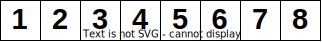

Lecture 6
Nikolaus Huber
Debugging
Outline
- What is debugging?
- Systematic debugging
- Problem shrinking
- Slicing
- Tools
What is debugging?
[...] it is the process of "diagnosing the precise nature of a known error and then correcting it."
Software debugging, testing, and verification, B. Hailpern, P. Santhanam. IBM Systems Journal, 2002
- Given a specification $\Phi$ and a program $P$, not satisfying some $\phi_k \in \Phi$
- Find a program $P'$ close to $P$ that does satisfy $\phi_k$
- Original program $P$ is said to contain a
bug


Starting point
Failure observed during development, testing, ...- Failing test case
- Problem during use of system
- Should write a test case reproducing the problem
- Issue reported by someone else
- First need to
reproduce the failure
From failure to fault
- Verify the
failure , determine correct behaviour - Isolate and minimize (shrink)
- Eyeball the code, where could the
fault be? - Divise and run experiments to test your hypothesis
- Repeat 3 & 4 until you understand what's wrong
- Fix the fault/bug and verify the fix
- Create a
regression test
Running example
int search(int array[], int len, int target) {
int low = 0;
int high = len;
while (low <= high) {
int mid = (low + high) / 2;
if (target < array[mid]) {
high = mid - 1;
} else if (target > array[mid]) {
low = mid + 1;
} else {
return mid;
}
}
return -1;
}
Problem minimisation 1: Inputs
- We want to get rid of
irrelevant complexity - Try to simplify the situation
As an analogon from the real world, consider a flight test: an air plane crashes a
few seconds after taking off. By repeating the situation over and over again under changed circumstances,
we can find out what is relevant and what not. For instance, we may leave away the passenger seats and find
that the plane still crashes. [...] Eventually, only the relevant "simplified" skeleton remains, including a
test pilot, the wings, the runway, the fuel, and the engines. Each part of this skeleton is relevant for
reproducing the crash.
Simplifying and Isolating Failure-Inducing Input, A. Zeller, R. Hildebrandt. IEEE Transactions on SE, 2002
Shrinking
- Going from failing program input to
minimal failing program input - Shrink the program input
- See if problem still occurs
- If so shrink more
- If not, backtrack
- Can be done manually, some clever algorithms do exist
Delta Debugging algorithm
- Generalization of binary search
- Basic idea:
- Divide input into chunks (initially 2)
- Remove a chunk, does the test still fail?
- If yes, continue without it
- If no, increase granularity (*2)
- Stop when cutting aways doesn't help anymore and number of chunks is the length of the input
- For more info, read the paper on Studium
Example - Array input
 Error whenever 1, 7, 8 are in the array
- Found a
1-minimal input - Removing any element of the array will cause the test to succeed
- Other types of minima exist
- Local minimum
- Global minimum
- Global minima $\subseteq$ Local minima $\subseteq$ 1-Minima
Problem Minimisation 2: Reasoning Backwards
- Central concept of debugging
- Main idea
- Given a Program $P$ and some occurance of variable $x$
- Remove all statements that
do not affect $x$ - End up with a simplified version $P'$ of $P$
- $P'$ only contains statements import for value of $x$
- Solution:
Static Backward Slicing
Slice construction
- Need to create a
Control Flow Graph (CFG) - Figure out which statements are control dependencies
- Statement B is control dependent on A if A influences wether B is executed
- Also need the
data dependencies - Statement B is data dependent on A if A writes to a variable that B reads from
Backward Slice
- Satement B is
directly backwards dependent on A if either - B is
control dependent on A - B is
data dependent on A - Statement B is
backwards dependent on A if B isdirectly backwards dependent on A in one or multiple steps - Transitive closure of "directly backwards dependent"
Example
Pass = 0;
Fail = 0;
Count = 0;
while (!eof()) {
TotalMarks=0;
scanf("%d", Marks);
if (Marks >= 40) { Pass = Pass + 1; }
if (Marks < 40) { Fail = Fail + 1; }
Count = Count + 1;
TotalMarks = TotalMarks + Marks;
}
printf("Out of %d, %d passed and %d failed\n", Count, Pass, Fail);
average = TotalMarks/Count;
printf("The average was %d\n", average);
Static Backward Slice
Given some occurance of variable x in a statement S, the static backward slice is the set of statements T such that
- S in control-dependent on T, or
- the occurance of x is data-dependent on T, or
- T is a backward dependency of some statement from 1. or 2.
Bug finding / Observation
- Simple logging
- printf
- serial output
- LEDs
- ...
- Logging frameworks
- log4c
- Zephyr logging
- ...
- Using a debugger
Debuggers
- Sophisticated tools to inspect and control program execution
- Most popular for C/C++: gdb
- Various GUIs and front-ends exist
- When using an IDE, debugging interface often already integrated
Features
- Manual stepping
- Inspection
- Variables, registers, memory
- Call stack
- Devices, peripherals
- Thread state and data
Breakpoints : Pause execution on program locationWatchpoints : Pause execution on reading/writing to memory location- Tracing